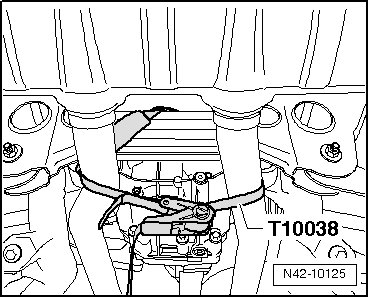
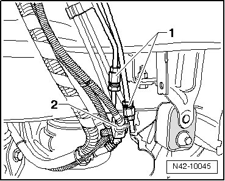
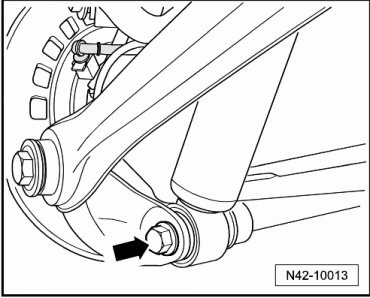
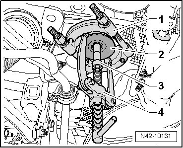
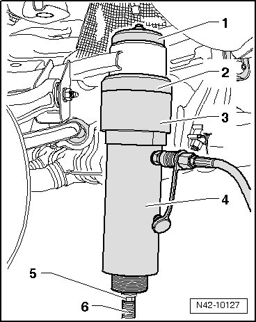
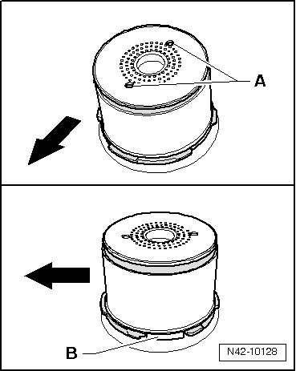
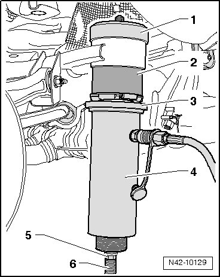
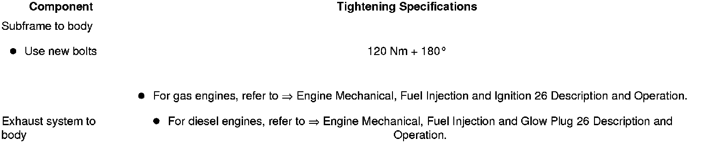

Rear Subframe Mount: Service and Repair
Subframe Bonded Rubber Bushing
- Before replacing faulty bushing, check the others as well.
If tears and damages are visible, they must also be replaced.
Special tools, testers and auxiliary items required
• Engine and transmission jack (VAG 1383 A)
• Kukko support (kukko 22-2)
• Kukko extractor (kukko 21/4)
• Kukko separating tool (kukko 15-2)
• Hydraulic press (VAS 6178) with pressure head (T10205/13)
• Tensioning strap (T10038)
• Hollow piston cylinder (VAS 6179)
• Torque wrench (VAG 1332)
• Assembly tool (T10301)
CAUTION!
Before starting work, stabilizer bars must be coupled in vehicles with separable stabilizer bars. Otherwise, there is the danger of injury caused by unintentional separation.
- Depressurize hydraulic system for separable stabilizer bars using the.
- Remove wheels.
- Secure exhaust system on subframe, as depicted in illustration, using tensioning strap (T10038).

- Remove rear part of exhaust system:
- Disconnect all electrical wires from body to axle.
With Separable Stabilizer Bar
- Remove left rear wheel housing liner.
- Disconnect both hydraulic lines - 1 - and electrical connection - 2 -.

Lines and wires must not be mixed up when connecting!
- Check whether color marking is present on front in driving direction. If no longer present, apply a new one.
- When loosening hydraulic lines, counter hold using open end wrench.
Continuation for All
- Remove strut bolt - arrow - from wheel bearing housing.

- Place engine and transmission jack (VAG 1383 A) under subframe.
- Remove two remaining attachments bolts for subframe.
Lower subframe (second mechanic required), note the following when doing this:
• Lower only as far as necessary
• Note electrical wires and brake hoses
• Lower subframe evenly from body
- Lower subframe.
To press out bonded rubber bushings, covers must be pulled out of inner core of mount first.
- Install tools as shown in the illustration.

1. 15-2 (kukko separating tool)
2. Cover
3. 21/4 (kukko extractor)
4. 22-2 (kukko support)
CAUTION!
Cover loosens abruptly, there is danger of injury caused by tools and cover falling down.
- Pull out cover using tools described.
Removing Bonded Rubber Bushing
- Install tools as shown in the illustration.

1. Press piece (T10301/5)
2. Support ring (T10301/4)
3. Tube (T10301/3)
4. Hydraulic press (VAS 6178) with pressure head (T10205/13)
5. Nut (T10301/2)
6. Spindle (T10301/1)
Chamfer on outer diameter of supporting ring (T10301/4) must face subframe.
- Press out bonded rubber bushing.
CAUTION!
Secure hydraulic cylinder (VAS 6178) while pressing out.
Installation Position
- Arrows - point in direction of travel.

Holes - A - longitudinal to direction of travel
Seams - B - perpendicular to direction of travel
Installing Bonded Rubber Bushing
- Install tools as shown in the illustration.

1. Press piece (T10301/7)
2. Bonded rubber bushing
3. Thrust pad (T10301/6)
4. Hydraulic press (VAS 6178) with pressure head (T10205/13)
5. Nut (T10301/2)
6. Spindle (T10301/1)
- Press in bonded rubber bushing until shoulder lies gap free at subframe sleeve.
- Mount subframe onto body and remove locating pins (T10300) (second mechanic required).
Further installation is in the reverse sequence to removal.
Tightening Specifications

With Separable Stabilizer Bar
- Bleed hydraulic system for separable stabilizer bar. Refer to--> [ Separable Stabilizer Bar, Bleeding ] Procedures.
Perform road test after repair work; if steering wheel is crooked, vehicle alignment must be performed. Refer to --> [ Wheel Alignment ] Wheel Alignment.